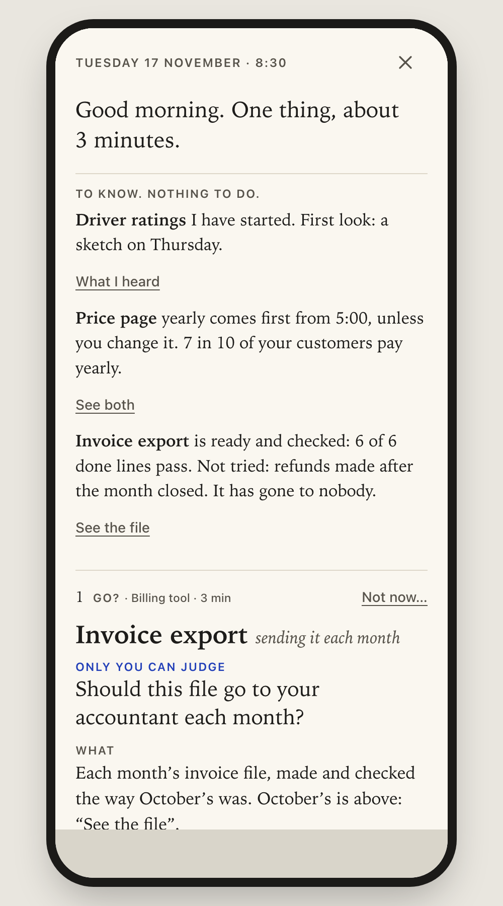
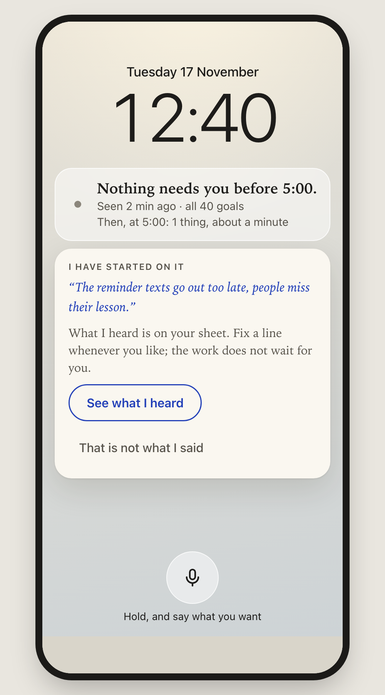
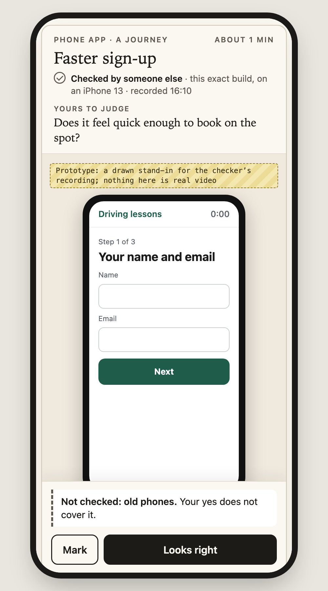
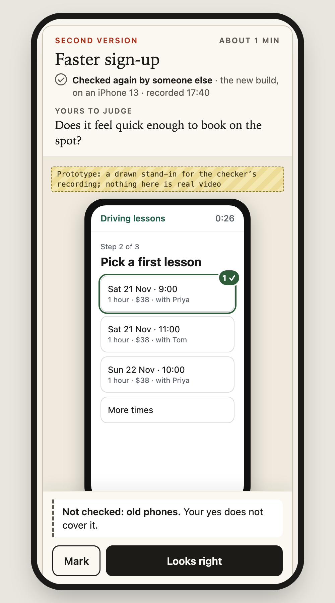
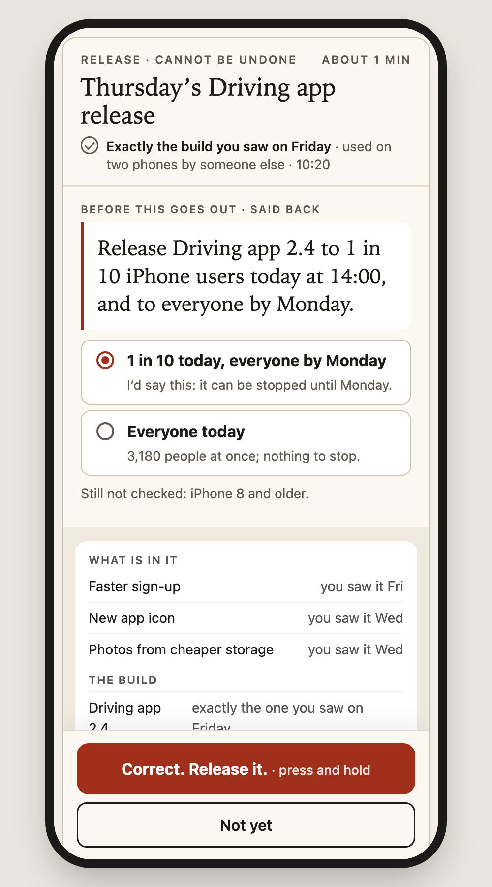
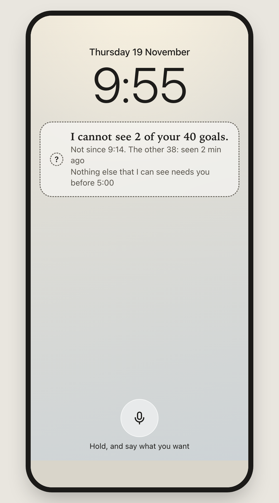

What you would see
One day, in seven pictures. About two minutes. One question at the end.
Today a goal comes back to you about five times before it is done, and nine times in ten you are the one who notices when work has stopped. This is built to cut the first by up to half and to take the second off you. These are pictures of the design. Nothing here is running yet.
1 · Morning
This is all your phone says.
No list of projects. No counts to work through. How much needs you, and for how long.

2 · You open it
What you only need to know, then the one thing only you can decide.
The thing you are deciding about is on the page beside the question. You do not go and find it.

3 · Midday, on the move
You say what you want. It starts.
It shows what it heard, and you can fix a line whenever you like. The work does not wait for you.

4 · A result reaches you
Someone other than its maker has already used it.
You get a recording of that, the one question that is yours, and a plain line for what was not checked.

5 · You point at what is wrong
It comes back with each mark answered, in place.
Checked again before you see it. Before and now, side by side. You do not re-read the whole thing.

6 · Before anything that cannot be undone
It stops, and says back exactly what will go out.
What is in it, to whom, what cannot be taken back. You press and hold. If anything in it changes afterwards, it asks again.

7 · When things go wrong
If it cannot see, it says so. It interrupts only when something cannot wait and only you can do it.
Silence means all is well only because it tells you when it is blind.


Only you can judge
Is this the direction?
Say yes, or say what is off in a sentence. Reply in the chat.
On a yes, the next thing I bring you is one go or no-go: the first piece to build, which is the check in picture 4.
Not checked: none of this has run, and no real phone has been used. The times and figures inside the pictures are made up.